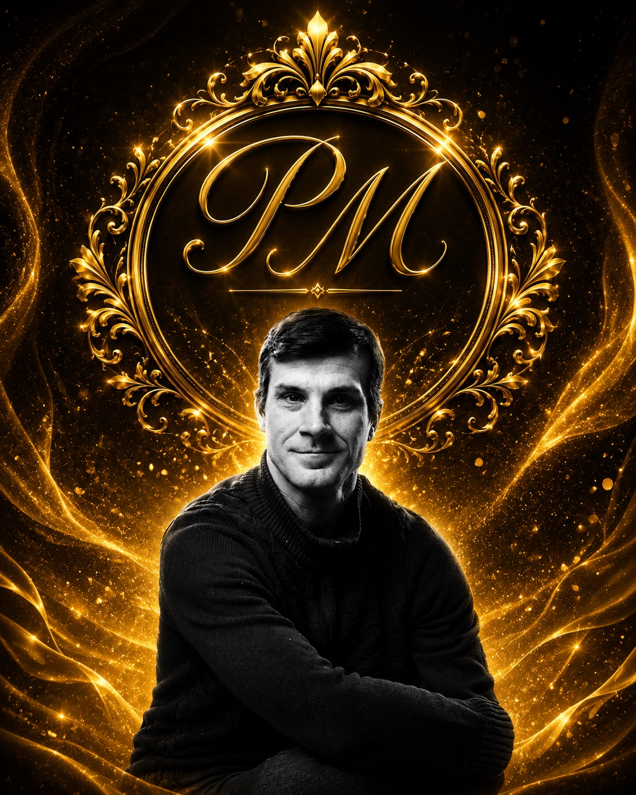

💬
Умное общение
Текстовый диалог с демонстрационными ответами. Позже подключается защищённый ИИ-сервер.
Общайтесь голосом или текстом, переключайте язык и получайте понятную помощь в одном месте.
Для работы микрофона запускайте сайт через START_PM_ASSISTANT.bat или размещайте его на HTTPS-хостинге.
Основа сайта уже готова к дальнейшему подключению настоящего искусственного интеллекта.
Текстовый диалог с демонстрационными ответами. Позже подключается защищённый ИИ-сервер.
Микрофон распознаёт речь на выбранном языке в поддерживаемом браузере.
Русский, украинский, немецкий и английский с автоматическим определением.
Подготовлено место для писем, заявлений, переводов и загрузки файлов.
Адаптивный дизайн для компьютера, iPhone, Android и планшета.
Секретные ключи не хранятся в открытом коде сайта и будут подключены через сервер.

PM Assistant задуман как доступный многоязычный сервис для людей, которым нужна помощь в общении, переводах, документах и повседневных вопросах.
Инициатор и основатель проекта — Павел Мышев. Главная идея — сделать современные технологии простыми, человечными и доступными.
Проект развивается поэтапно: сайт, рабочий ИИ-ассистент, мобильные приложения, партнёрские интеграции и масштабирование.
Людям сложно пользоваться разрозненными сервисами, особенно при языковых и физических ограничениях.
Один доступный интерфейс с голосом, переводами, документами и персональной помощью.
Модель подписки, организации-партнёры, социальные программы и корпоративные лицензии.
Здесь позже появятся инструкции, ответы на частые вопросы, WhatsApp, Telegram и QR-коды.
Пробная форма работает локально: она проверяет поля и показывает подтверждение, но пока не отправляет письмо на сервер.